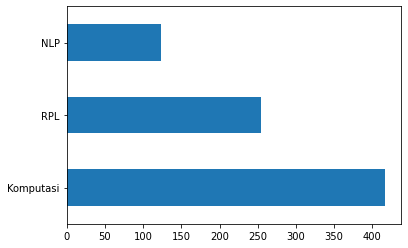
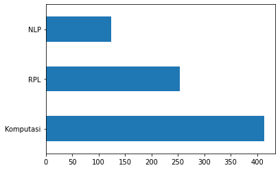

Tugas 3 Crawling Data PTA dengan Label#
Load Data#
import numpy as np
import pandas as pd
# df = pd.read_excel('ptasudah.xlsx')
df = pd.read_csv('https://raw.githubusercontent.com/HamedAyani114/dataset/main/csv/Data_PTA_mentah.csv')
df.head()
| NPM | Judul | Abstrak | Prodi | Label | |
|---|---|---|---|---|---|
| 0 | 40411100468 | PERANCANGAN DAN IMPLEMENTASI SISTEM DATABASE T... | Sistem informasi akademik (SIAKAD) merupaka... | Teknik Informatika | RPL |
| 1 | 40411100476 | APLIKASI KONTROL DAN MONITORING JARINGAN KOMPU... | Berjalannya koneksi jaringan komputer dengan l... | Teknik Informatika | RPL |
| 2 | 40411100480 | RANCANG BANGUN APLIKASI PROXY SERVER UNTUKENKR... | Web server adalah sebuah perangkat lunak serve... | Teknik Informatika | RPL |
| 3 | 70411100070 | SISTEM PENDUKUNG KEPUTUSAN OPTIMASI PENJADWALA... | Penjadwalan kuliah di Perguruan Tinggi me... | Teknik Informatika | komputasi |
| 4 | 80411100115 | SISTEM AUGMENTED REALITY ANIMASI BENDA BERGERA... | Seiring perkembangan teknologi yang ada diduni... | Teknik Informatika | komputasi |
df.isnull().sum()
NPM 0
Judul 6
Abstrak 25
Prodi 0
Label 43
dtype: int64
# drop rows with missing values yaknik abstract
df.dropna(subset=['Abstrak'], inplace=True)
df.isnull().sum()
NPM 0
Judul 0
Abstrak 0
Prodi 0
Label 18
dtype: int64
df.count()
NPM 828
Judul 828
Abstrak 828
Prodi 828
Label 810
dtype: int64
# jumlah data pada setiap kategori
df['Kelas'].value_counts()
KeyErrorTraceback (most recent call last)
/usr/local/lib/python3.10/dist-packages/pandas/core/indexes/base.py in get_loc(self, key, method, tolerance)
3801 try:
-> 3802 return self._engine.get_loc(casted_key)
3803 except KeyError as err:
/usr/local/lib/python3.10/dist-packages/pandas/_libs/index.pyx in pandas._libs.index.IndexEngine.get_loc()
/usr/local/lib/python3.10/dist-packages/pandas/_libs/index.pyx in pandas._libs.index.IndexEngine.get_loc()
pandas/_libs/hashtable_class_helper.pxi in pandas._libs.hashtable.PyObjectHashTable.get_item()
pandas/_libs/hashtable_class_helper.pxi in pandas._libs.hashtable.PyObjectHashTable.get_item()
KeyError: 'Kelas'
The above exception was the direct cause of the following exception:
KeyErrorTraceback (most recent call last)
<ipython-input-6-d03060ccb812> in <cell line: 2>()
1 # jumlah data pada setiap kategori
----> 2 df['Kelas'].value_counts()
/usr/local/lib/python3.10/dist-packages/pandas/core/frame.py in __getitem__(self, key)
3805 if self.columns.nlevels > 1:
3806 return self._getitem_multilevel(key)
-> 3807 indexer = self.columns.get_loc(key)
3808 if is_integer(indexer):
3809 indexer = [indexer]
/usr/local/lib/python3.10/dist-packages/pandas/core/indexes/base.py in get_loc(self, key, method, tolerance)
3802 return self._engine.get_loc(casted_key)
3803 except KeyError as err:
-> 3804 raise KeyError(key) from err
3805 except TypeError:
3806 # If we have a listlike key, _check_indexing_error will raise
KeyError: 'Kelas'
# plot jumlah data pada setiap kategori
import matplotlib.pyplot as plt
df['Kelas'].value_counts().plot(kind='barh')
plt.show()

Cleaning#
import re
import string
# Text Cleaning
def cleaning(text):
# HTML Tag Removal
text = re.compile(
'<.*?>|&([a-z0-9]+|#[0-9]{1,6}|#x[0-9a-f]{1,6});').sub('', str(text))
# Case folding
text = text.lower()
# Trim text
text = text.strip()
# Remove punctuations, karakter spesial, and spasi ganda
text = re.compile('<.*?>').sub('', text)
text = re.compile('[%s]' % re.escape(string.punctuation)).sub(' ', text)
text = re.sub('\s+', ' ', text)
# Number removal
text = re.sub(r'\[[0-9]*\]', ' ', text)
text = re.sub(r'[^\w\s]', '', str(text).lower().strip())
text = re.sub(r'\d', ' ', text)
text = re.sub(r'\s+', ' ', text)
# Mengubah text 'nan' dengan whitespace agar nantinya dapat dihapus
text = re.sub('nan', '', text)
return text
df['Judul'] = df['Judul'].apply(lambda x: cleaning(x))
df['Abstrak'] = df['Abstrak'].apply(lambda x: cleaning(x))
df.head()
| NIM | Nama | Judul | Abstrak | Kelas | |
|---|---|---|---|---|---|
| 0 | 40411100468 | A.Ubaidillah S.Kom | perancangan dan implementasi sistem database t... | sistem informasi akademik siakad merupakan sis... | RPL |
| 1 | 40411100476 | M. Basith Ardianto, | aplikasi kontrol dan monitoring jaringan kompu... | berjalannya koneksi jaringan komputer dengan l... | RPL |
| 2 | 70411100070 | Heri Supriyanto | sistem pendukung keputusan optimasi penjadwala... | penjadwalan kuliah di perguruan tinggi merupak... | Komputasi |
| 3 | 80411100115 | Septian Rahman Hakim | sistem augmented reality animasi benda bergera... | seiring perkembangan teknologi yang ada diduni... | Komputasi |
| 4 | 70411100007 | Adi Chandra Laksono | gerak pekerja pada game real time strategy men... | gerak pekerja ada pada game yang memiliki genr... | RPL |
# Checkpoint: Export Hasil Text Cleaning
df.to_csv('pta-cleaning.csv')
Remove Missing Values#
# ubah empty string menjadi NaN
df = df.replace('', np.nan)
# cek missing value
df.isnull().sum()
NIM 0
Nama 0
Judul 0
Abstrak 2
Kelas 0
dtype: int64
# remove rows with missing values
df.dropna(subset=['Abstrak'], inplace=True)
len(df)
793
Remove Duplicate Values#
# cek apakah masih ada terdapat duplicate data pada kolom abstrak
df[df['Abstrak'].duplicated()]
| NIM | Nama | Judul | Abstrak | Kelas |
|---|
# cek apakah masih ada terdapat duplicate data pada kolom judul
df[df['Judul'].duplicated()]
| NIM | Nama | Judul | Abstrak | Kelas | |
|---|---|---|---|---|---|
| 673 | 120411100015 | Abdul Ainur Rofik | sistem pendukung keputusan pemilihan pemain bo... | peningkatan pembinaan permai bola voli terutam... | Komputasi |
# Remove duplicates judul
df.drop_duplicates(subset=['Judul'], inplace=True)
# Cek apakah masih terdapat duplikasi data pada kolom judul
df[df['Judul'].duplicated()]
| NIM | Nama | Judul | Abstrak | Kelas |
|---|
# export hasil pre-processing
df.to_csv('pta-preprocessing.csv')
# Distribusi Kelas pada Data Pre-Processing
df['Kelas'].value_counts().plot(kind='barh')
plt.show()

Tokenisasi#
import nltk
nltk.download('popular')
[nltk_data] Downloading collection 'popular'
[nltk_data] |
[nltk_data] | Downloading package cmudict to
[nltk_data] | C:\Users\Dio\AppData\Roaming\nltk_data...
[nltk_data] | Package cmudict is already up-to-date!
[nltk_data] | Downloading package gazetteers to
[nltk_data] | C:\Users\Dio\AppData\Roaming\nltk_data...
[nltk_data] | Package gazetteers is already up-to-date!
[nltk_data] | Downloading package genesis to
[nltk_data] | C:\Users\Dio\AppData\Roaming\nltk_data...
[nltk_data] | Package genesis is already up-to-date!
[nltk_data] | Downloading package gutenberg to
[nltk_data] | C:\Users\Dio\AppData\Roaming\nltk_data...
[nltk_data] | Package gutenberg is already up-to-date!
[nltk_data] | Downloading package inaugural to
[nltk_data] | C:\Users\Dio\AppData\Roaming\nltk_data...
[nltk_data] | Package inaugural is already up-to-date!
[nltk_data] | Downloading package movie_reviews to
[nltk_data] | C:\Users\Dio\AppData\Roaming\nltk_data...
[nltk_data] | Package movie_reviews is already up-to-date!
[nltk_data] | Downloading package names to
[nltk_data] | C:\Users\Dio\AppData\Roaming\nltk_data...
[nltk_data] | Package names is already up-to-date!
[nltk_data] | Downloading package shakespeare to
[nltk_data] | C:\Users\Dio\AppData\Roaming\nltk_data...
[nltk_data] | Package shakespeare is already up-to-date!
[nltk_data] | Downloading package stopwords to
[nltk_data] | C:\Users\Dio\AppData\Roaming\nltk_data...
[nltk_data] | Package stopwords is already up-to-date!
[nltk_data] | Downloading package treebank to
[nltk_data] | C:\Users\Dio\AppData\Roaming\nltk_data...
[nltk_data] | Package treebank is already up-to-date!
[nltk_data] | Downloading package twitter_samples to
[nltk_data] | C:\Users\Dio\AppData\Roaming\nltk_data...
[nltk_data] | Package twitter_samples is already up-to-date!
[nltk_data] | Downloading package omw to
[nltk_data] | C:\Users\Dio\AppData\Roaming\nltk_data...
[nltk_data] | Package omw is already up-to-date!
[nltk_data] | Downloading package omw-1.4 to
[nltk_data] | C:\Users\Dio\AppData\Roaming\nltk_data...
[nltk_data] | Package omw-1.4 is already up-to-date!
[nltk_data] | Downloading package wordnet to
[nltk_data] | C:\Users\Dio\AppData\Roaming\nltk_data...
[nltk_data] | Package wordnet is already up-to-date!
[nltk_data] | Downloading package wordnet2021 to
[nltk_data] | C:\Users\Dio\AppData\Roaming\nltk_data...
[nltk_data] | Package wordnet2021 is already up-to-date!
[nltk_data] | Downloading package wordnet31 to
[nltk_data] | C:\Users\Dio\AppData\Roaming\nltk_data...
[nltk_data] | Package wordnet31 is already up-to-date!
[nltk_data] | Downloading package wordnet_ic to
[nltk_data] | C:\Users\Dio\AppData\Roaming\nltk_data...
[nltk_data] | Package wordnet_ic is already up-to-date!
[nltk_data] | Downloading package words to
[nltk_data] | C:\Users\Dio\AppData\Roaming\nltk_data...
[nltk_data] | Package words is already up-to-date!
[nltk_data] | Downloading package maxent_ne_chunker to
[nltk_data] | C:\Users\Dio\AppData\Roaming\nltk_data...
[nltk_data] | Package maxent_ne_chunker is already up-to-date!
[nltk_data] | Downloading package punkt to
[nltk_data] | C:\Users\Dio\AppData\Roaming\nltk_data...
[nltk_data] | Package punkt is already up-to-date!
[nltk_data] | Downloading package snowball_data to
[nltk_data] | C:\Users\Dio\AppData\Roaming\nltk_data...
[nltk_data] | Package snowball_data is already up-to-date!
[nltk_data] | Downloading package averaged_perceptron_tagger to
[nltk_data] | C:\Users\Dio\AppData\Roaming\nltk_data...
[nltk_data] | Package averaged_perceptron_tagger is already up-
[nltk_data] | to-date!
[nltk_data] |
[nltk_data] Done downloading collection popular
True
from nltk.tokenize import word_tokenize
# tokenisasi judul
df['token_judul'] = df['Judul'].apply(lambda x: word_tokenize(x))
df[['Judul', 'token_judul']].head()
| Judul | token_judul | |
|---|---|---|
| 0 | perancangan dan implementasi sistem database t... | [perancangan, dan, implementasi, sistem, datab... |
| 1 | aplikasi kontrol dan monitoring jaringan kompu... | [aplikasi, kontrol, dan, monitoring, jaringan,... |
| 2 | sistem pendukung keputusan optimasi penjadwala... | [sistem, pendukung, keputusan, optimasi, penja... |
| 3 | sistem augmented reality animasi benda bergera... | [sistem, augmented, reality, animasi, benda, b... |
| 4 | gerak pekerja pada game real time strategy men... | [gerak, pekerja, pada, game, real, time, strat... |
# tokenisasi abstrak
df['token_abstrak'] = df['Abstrak'].apply(lambda x: word_tokenize(x))
df[['Abstrak', 'token_abstrak']].tail()
| Abstrak | token_abstrak | |
|---|---|---|
| 793 | investasi saham selama ini memiliki resiko ker... | [investasi, saham, selama, ini, memiliki, resi... |
| 794 | information retrieval ir merupakan pengambilan... | [information, retrieval, ir, merupakan, pengam... |
| 795 | klasifikasi citra merupakan proses pengelompok... | [klasifikasi, citra, merupakan, proses, pengel... |
| 796 | identifikasi atribut pejalan kaki merupakan sa... | [identifikasi, atribut, pejalan, kaki, merupak... |
| 797 | topik deteksi objek telah menarik perhatian ya... | [topik, deteksi, objek, telah, menarik, perhat... |
Stopword Removal#
from nltk.corpus import stopwords
from itertools import chain
# stopword removal
stop_words = set(chain(stopwords.words('indonesian'), stopwords.words('english')))
df['token_judul'] = df['token_judul'].apply(lambda x: [w for w in x if not w in stop_words])
df['token_abstrak'] = df['token_abstrak'].apply(lambda x: [w for w in x if not w in stop_words])
df[['Judul', 'token_judul']].head()
| Judul | token_judul | |
|---|---|---|
| 0 | perancangan dan implementasi sistem database t... | [perancangan, implementasi, sistem, database, ... |
| 1 | aplikasi kontrol dan monitoring jaringan kompu... | [aplikasi, kontrol, monitoring, jaringan, komp... |
| 2 | sistem pendukung keputusan optimasi penjadwala... | [sistem, pendukung, keputusan, optimasi, penja... |
| 3 | sistem augmented reality animasi benda bergera... | [sistem, augmented, reality, animasi, benda, b... |
| 4 | gerak pekerja pada game real time strategy men... | [gerak, pekerja, game, real, time, strategy, f... |
df[['Abstrak', 'token_abstrak']].tail()
| Abstrak | token_abstrak | |
|---|---|---|
| 793 | investasi saham selama ini memiliki resiko ker... | [investasi, saham, memiliki, resiko, kerugian,... |
| 794 | information retrieval ir merupakan pengambilan... | [information, retrieval, ir, pengambilan, info... |
| 795 | klasifikasi citra merupakan proses pengelompok... | [klasifikasi, citra, proses, pengelompokan, pi... |
| 796 | identifikasi atribut pejalan kaki merupakan sa... | [identifikasi, atribut, pejalan, kaki, salah, ... |
| 797 | topik deteksi objek telah menarik perhatian ya... | [topik, deteksi, objek, menarik, perhatian, pe... |
Stemming#
from Sastrawi.Stemmer.StemmerFactory import StemmerFactory
from tqdm.auto import tqdm
tqdm.pandas()
factory = StemmerFactory()
stemmer = factory.create_stemmer()
# stemming
df['token_judul'] = df['token_judul'].progress_apply(lambda x: [stemmer.stem(w) for w in x])
100%|██████████| 792/792 [02:26<00:00, 5.42it/s]
# Hasil Stemming Judul
df[['Judul', 'token_judul']].tail()
| Judul | token_judul | |
|---|---|---|
| 793 | penerapan algoritma long short term memory unt... | [terap, algoritma, long, short, term, memory, ... |
| 794 | sistem pencarian teks al quran terjemahan berb... | [sistem, cari, teks, al, quran, terjemah, baha... |
| 795 | klasifikasi kompleksitas visual citra sampah m... | [klasifikasi, kompleksitas, visual, citra, sam... |
| 796 | identifikasi biner atribut pejalan kaki menggu... | [identifikasi, biner, atribut, pejal, kaki, ad... |
| 797 | deteksi objek manusia berbasis one stage detec... | [deteksi, objek, manusia, bas, one, stage, det... |
# stemming abstrak
df['token_abstrak'] = df['token_abstrak'].progress_apply(lambda x: [stemmer.stem(w) for w in x])
100%|██████████| 792/792 [05:37<00:00, 2.34it/s]
# Hasil Stemming Abstrak
df[['Abstrak', 'token_abstrak']].tail()
| Abstrak | token_abstrak | |
|---|---|---|
| 793 | investasi saham selama ini memiliki resiko ker... | [investasi, saham, milik, resiko, rugi, gera, ... |
| 794 | information retrieval ir merupakan pengambilan... | [information, retrieval, ir, ambil, informasi,... |
| 795 | klasifikasi citra merupakan proses pengelompok... | [klasifikasi, citra, proses, kelompok, piksel,... |
| 796 | identifikasi atribut pejalan kaki merupakan sa... | [identifikasi, atribut, pejal, kaki, salah, te... |
| 797 | topik deteksi objek telah menarik perhatian ya... | [topik, deteksi, objek, tarik, perhati, kemban... |
Export Cleaned Data#
df
| NIM | Nama | Judul | Abstrak | Kelas | token_judul | token_abstrak | |
|---|---|---|---|---|---|---|---|
| 0 | 40411100468 | A.Ubaidillah S.Kom | perancangan dan implementasi sistem database t... | sistem informasi akademik siakad merupakan sis... | RPL | [ancang, implementasi, sistem, database, distr... | [sistem, informasi, akademik, siakad, sistem, ... |
| 1 | 40411100476 | M. Basith Ardianto, | aplikasi kontrol dan monitoring jaringan kompu... | berjalannya koneksi jaringan komputer dengan l... | RPL | [aplikasi, kontrol, monitoring, jaring, komput... | [jalan, koneksi, jaring, komputer, lancar, gan... |
| 2 | 70411100070 | Heri Supriyanto | sistem pendukung keputusan optimasi penjadwala... | penjadwalan kuliah di perguruan tinggi merupak... | Komputasi | [sistem, dukung, putus, optimasi, jadwal, mata... | [jadwal, kuliah, guru, kompleks, masalah, vari... |
| 3 | 80411100115 | Septian Rahman Hakim | sistem augmented reality animasi benda bergera... | seiring perkembangan teknologi yang ada diduni... | Komputasi | [sistem, augmented, reality, animasi, benda, g... | [iring, kembang, teknologi, dunia, muncul, tek... |
| 4 | 70411100007 | Adi Chandra Laksono | gerak pekerja pada game real time strategy men... | gerak pekerja ada pada game yang memiliki genr... | RPL | [gerak, kerja, game, real, time, strategy, fin... | [gerak, kerja, game, milik, genre, rts, real, ... |
| ... | ... | ... | ... | ... | ... | ... | ... |
| 793 | 160411100032 | Rachmad Agung Pambudi | penerapan algoritma long short term memory unt... | investasi saham selama ini memiliki resiko ker... | NLP | [terap, algoritma, long, short, term, memory, ... | [investasi, saham, milik, resiko, rugi, gera, ... |
| 794 | 160411100182 | Nadila Hidayanti | sistem pencarian teks al quran terjemahan berb... | information retrieval ir merupakan pengambilan... | Komputasi | [sistem, cari, teks, al, quran, terjemah, baha... | [information, retrieval, ir, ambil, informasi,... |
| 795 | 160411100077 | Afni Sakinah | klasifikasi kompleksitas visual citra sampah m... | klasifikasi citra merupakan proses pengelompok... | Komputasi | [klasifikasi, kompleksitas, visual, citra, sam... | [klasifikasi, citra, proses, kelompok, piksel,... |
| 796 | 160411100084 | Friska Fatmawatiningrum | identifikasi biner atribut pejalan kaki menggu... | identifikasi atribut pejalan kaki merupakan sa... | NLP | [identifikasi, biner, atribut, pejal, kaki, ad... | [identifikasi, atribut, pejal, kaki, salah, te... |
| 797 | 160411100044 | Dian Wibowo | deteksi objek manusia berbasis one stage detec... | topik deteksi objek telah menarik perhatian ya... | Komputasi | [deteksi, objek, manusia, bas, one, stage, det... | [topik, deteksi, objek, tarik, perhati, kemban... |
792 rows × 7 columns
df['token_judul'] = df['token_judul'].apply(lambda x: ' '.join(x))
df['token_abstrak'] = df['token_abstrak'].apply(lambda x: ' '.join(x))
# export hasil pre-processing
df.to_csv('pta-cleaneddatakelas.csv')